2026-10-17｜6 張修改 · 10 張沿用｜白色透明 PNG｜屬性等級初稿 I
機械三爪代表「鈎索本體」，用於基礎圖示、能量減耗及冷卻減免。特殊技能「拉怪」原有大彎鉤維持不變。這是美術審閱稿，尚未替換 Unity 資產或技能名稱資料。
鈎索能量條示意：

保持既有設計。
左側直立針筒搭配右側簡化心臟，重新安排構圖。

改名「槍械高手」；交叉雙槍改為 RSh-12 左輪，保留三發子彈。
移除右側向上箭頭，改為右上 >>。
沿用機械三爪，中央 I，右上 −。

沿用機械三爪，中央 I，右上 >>。

鈎索本體：球形核心、三個關節爪、後方連接座與短繩索。